使用說明
GearFlow 操作模板
以下內容先保留為模板，之後可直接補上正式說明。
00. 基本設定
開始建立活動前，建議先整理倉庫、物品、聯絡人與帳戶設定。這些資料之後會在活動規劃、裝車、點名與雲端協作中重複使用。
首頁入口
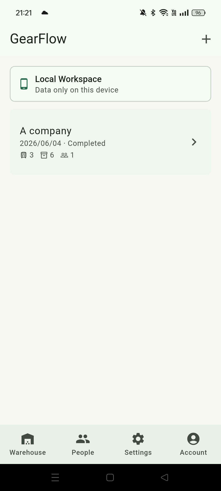
管理平常存放物品的地點，以及所有可被活動使用的物品。
建立常用人員與聯絡方式，活動中可快速加入與點名。
調整主題、日期時間格式與活動物品排序方式。
管理個人資料、登入登出、雲端空間與訂閱。
Warehouse：建立倉庫與物品庫
Warehouse 分成 Warehouses 與 Gear Library。Warehouses 用來建立平常儲存物品的地點，例如公司、家中、車上、外部倉庫或臨時收納點；Gear Library 則集中管理所有物品，並可設定每個物品的所屬倉庫。
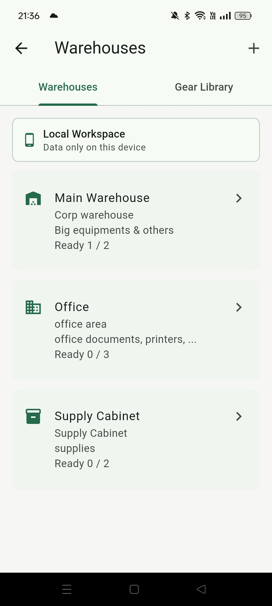
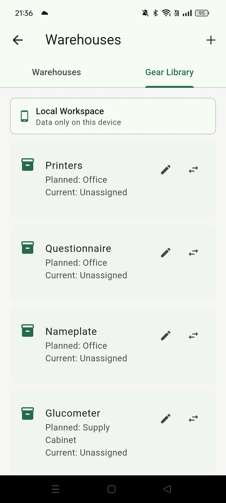
People：建立聯絡人
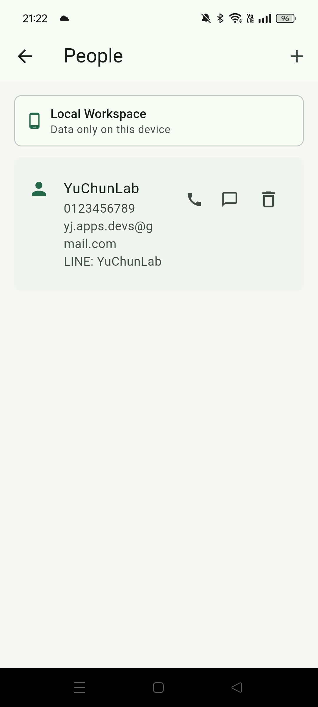
Settings：調整顯示與排序
Settings 可以設定主題顏色、日期與時間顯示方式，以及活動物品與物品庫的排序邏輯。先設定好偏好的格式，後續活動列表與檢視頁會更符合你的工作習慣。
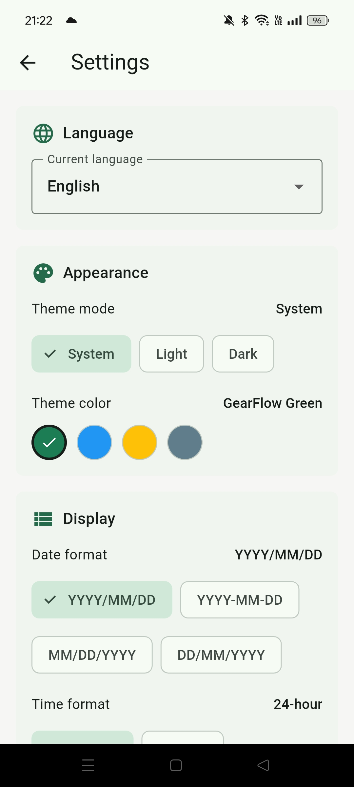
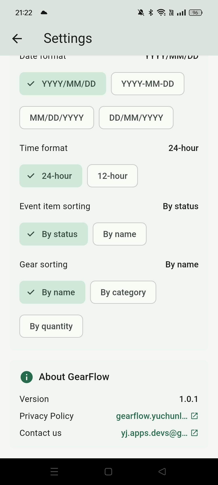
Account：帳戶、雲端空間與訂閱
Account 可編輯顯示名稱、管理密碼、登入或登出。雲端空間與訂閱也在這裡管理：你可以建立雲端工作區、加入成員，或依方案調整可使用的空間、人員、倉庫、物品與活動上限。
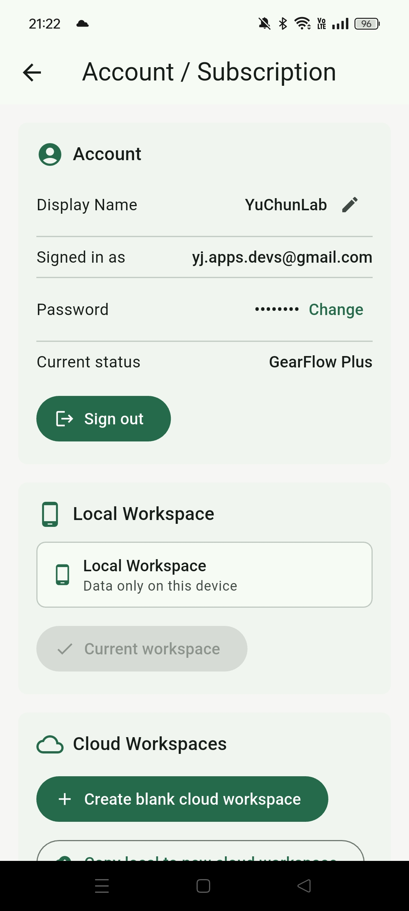
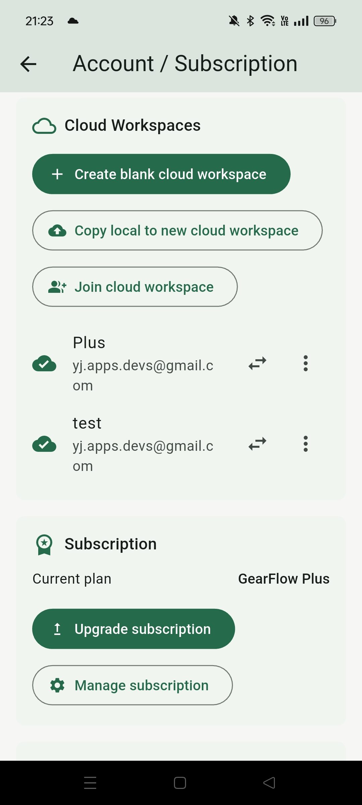
建議順序：先建立倉庫，再建立物品庫與聯絡人，最後確認設定與帳戶。完成這些基本資料後，建立活動時會更快，也比較不容易漏掉人員或物品。
01. 建立活動
活動是 GearFlow 的主要工作單位。建立活動後，可以集中管理日期、狀態、地點、車輛、物品與人員，讓事前準備與現場確認都在同一個檢視頁完成。
從首頁新增活動
活動檢視頁
點進活動後會進入正式檢視頁。頁面上方會顯示日期與活動狀態，並提供編輯、刪除與開始活動的操作。開始活動後，已規劃的物品會從原本倉庫移到活動中，倉庫內的物品狀態也會同步改變。
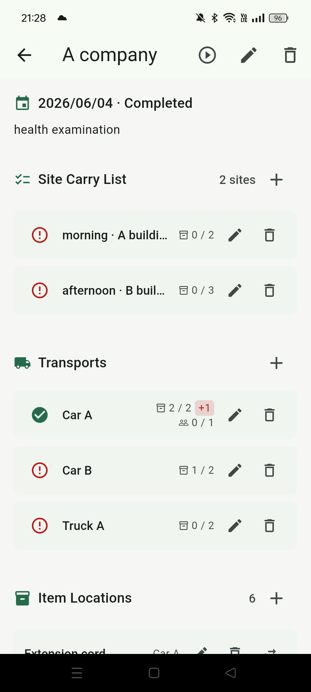
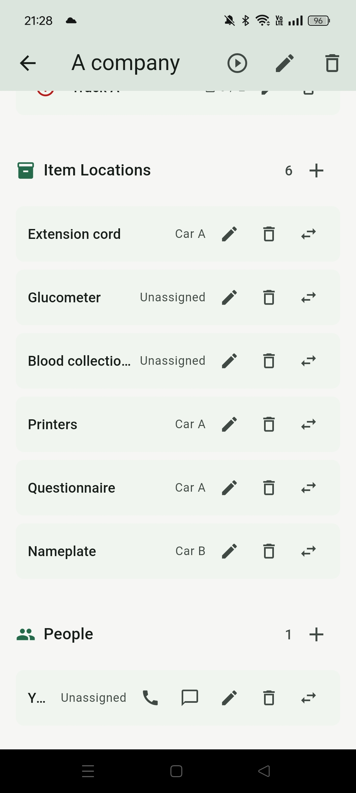
- 上方圖示可編輯或刪除活動；開始圖示會把活動切換到進行中。
- 開始活動後，規劃物品會從所屬倉庫移入活動，方便後續裝車與現場確認。
- 日期與活動狀態會顯示在活動頁上方，方便快速確認目前進度。
- 活動內可管理地點、運輸車輛、物品與人員，所有準備項目集中在同一頁。
02. 整理裝備與地點
活動開始前，先把物品、地點與運輸車輛對應清楚。GearFlow 會用 Site、Vehicle 與 Event Items 三個角度來追蹤物品與人員的位置，讓你知道哪些已到位、哪些還在車上、哪些是多出來的。
Site：管理地點與到場物品
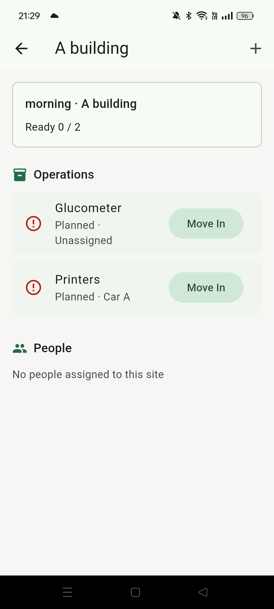
- Site 裡可以編輯加入的 items，並從倉庫快速加入新的物品。
- 從 Site 加入且尚未存在於活動的物品，會自動新增到活動的 Event Items。
- People 的新增與編輯要回到活動外層的 People 管理，不在 Site 內直接建立。
- 在 Site 內可以把物品搬入或搬出，用來更新現場物品狀態。
Event Items：移動物品與指定運輸車輛
Event Items 是活動物品的總管理區。每個 item 右側的移動操作可以變更目前位置；在外層的 Event Items 管理中，也可以設定物品負責的運輸車輛，讓裝車與卸貨流程更清楚。
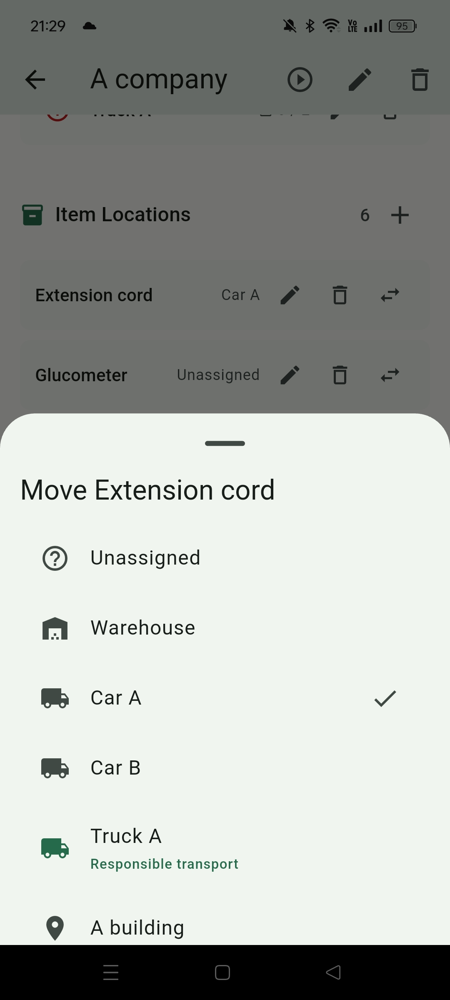
Vehicle：車輛、負責人與搬運狀態
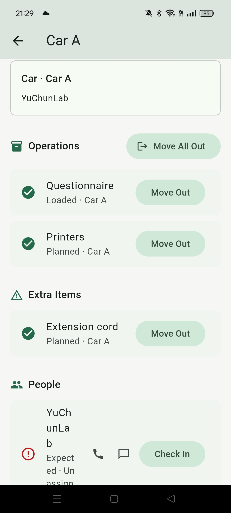
活動總覽：應到、實到與多出
03. 團隊同步查看
需要多人一起查看或更新活動時，可以把資料放到雲端空間。雲端空間可建立新的空白工作區，也可以把目前本地資料複製成新的雲端工作區，讓團隊用同一份活動資料協作。
建立或切換雲端空間
- 可以建立新的雲端空間，或把本地資料複製到新的雲端空間。
- 點雲端空間右側的切換 / 移動圖示後，系統會切到該雲端空間。
- 切換後回到 Events，看到的就是該雲端空間裡的活動資料。
加入成員與管理權限
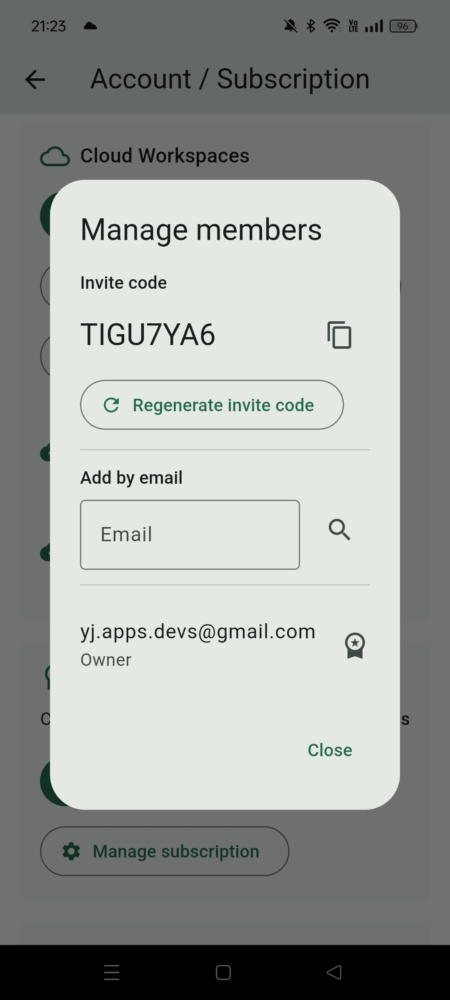
- 邀請碼適合讓對方自行加入雲端空間。
- Email 加入適合直接指定已註冊 GearFlow 的使用者。
- 加入後可以管理成員權限，控制對方能編輯、操作或只查看內容。
協作設計：同一份活動資料、不同現場角色
GearFlow 的設計重點不是讓每個人各自記一份清單，而是讓團隊共用同一個活動狀態。規劃者先設定活動、地點、車輛、人員與物品；現場人員只要依照自己的角色更新物品位置與人員報到狀態；只需要查看的人則可以用較低權限確認進度。
- 權限分成 owner、plan editor、operator、viewer：管理者可調整工作區與成員，規劃者可編輯計畫，現場操作人員可更新搬運與報到狀態，viewer 則只負責查看。
- 活動頁會把 Site 與 Vehicle 的物品、人員狀態整理成應到 / 實到 / 多出，現場不用到處翻清單就能知道哪裡還沒完成。
- 物品與人員的每一次搬入、搬出、check in、check out 都會回到同一份活動資料，減少口頭回報造成的落差。
- 聯絡資訊只給需要操作活動的人查看；單純 viewer 可以確認誰應該在哪裡，但不會直接看到電話、Email 或 LINE。